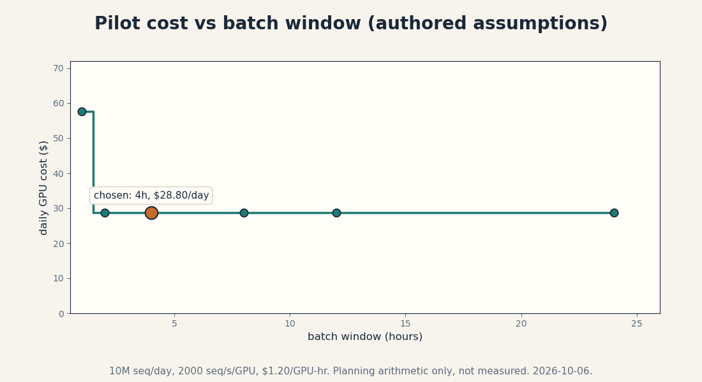

Capstone F1 · Applied FDE
Applied FDE capstone: synthetic transaction sequences for fraud-model stress testing
Date: 2026-10-06. Course: math-genmodels (Mathematical Foundations of Generative Models), units U07, U08. Status: practice artifact. The engagement is hypothetical, a composite of typical FDE discovery patterns. No real client, no real deployment, no measured production numbers. Every planning number is authored arithmetic and labeled as such. Lesson numbers are reused as metric concepts, not as claims about this pilot. Claim labels: [Definition] [Derived] [Computed: lesson or script, date] [Authored: planning assumption] [Course-title].
Discovery
The client is a mid-size bank’s fraud-modeling team. [Authored] Discovery interviews with the fraud lead, two modelers, and the compliance officer surface three facts. First, the fraud classifier is stress-tested today on 3 months of historical transactions replayed with rule-based perturbations, which miss novel fraud shapes. Second, real transaction data cannot leave the bank VPC and cannot be shared with the cloud vendor that hosts the modeling platform. Third, compliance requires that any synthetic data used in model validation carry a documented memorization test: no synthetic sequence may reproduce a real customer’s transaction history.
The FDE question is not “which generator is smartest”. It is “what is the cheapest system that produces realistic transaction sequences, scores their likelihood exactly for anomaly work, and provably does not memorize customers”. Model sophistication is not the business goal.
Workflow baseline
[Authored] Current state, from discovery estimates: stress tests run weekly on 2M historical sequences, take 11 hours on the existing cluster, and cover only fraud patterns seen in the last 3 months. A new fraud wave takes 6 to 8 weeks to appear in the test set. The baseline that matters for acceptance is coverage of unseen patterns plus the memorization gate, because a sharp simulator that leaks customer histories is a compliance incident, not a win.
Objectives
- Generate 10M synthetic sequences per day inside the VPC, each 64 events over a 512-symbol vocabulary.
- Match the real event-type distribution: precision >= 0.90, recall >= 0.85 on event types (U08-C04 concepts).
- Zero exact memorized sequences per 1M generated (U08-C06 concept), verified by nearest-neighbor audit.
- Held-out NLL within 5 percent of training NLL (U08-C01 concept): the simulator must generalize.
- Batch latency: the full 10M within a 4-hour nightly window.
Constraints and trust boundaries
Constraints: no real customer sequence may appear in the output (compliance gate). All training and generation inside the bank VPC. The model must be explainable to regulators: the team chose an autoregressive model partly because its likelihood is exact and auditable (U07-C08), unlike a GAN’s implicit law (U05-C01).
Trust boundaries: raw transactions never cross the VPC boundary. Only synthetic sequences and aggregate metrics leave. The memorization audit runs inside the VPC on every batch. A failed audit quarantines the batch automatically. Prompts and seeds are logged. Outputs are versioned with the model checkpoint that produced them.
Alternatives considered
Rule-based simulator (current): exact control, zero memorization risk, but cannot invent novel fraud shapes. Rejected for the coverage objective. GAN (U05): sharp sequences, but no likelihood for anomaly scoring and no memorization certificate. Rejected on objectives 3 and 4. Diffusion on discrete sequences (U06-C12 notes the discrete breakage): possible, but the AR model is simpler and its likelihood is exact without dequantization arguments. Chosen: a 12M-parameter autoregressive transformer, trained with teacher forcing (U07-C04), sampled at moderate temperature with top-p truncation (U07-C07).
Acceptance gates
| Gate | Threshold | Concept |
|---|---|---|
| Held-out NLL vs train NLL | within 5% | U08-C01 |
| Event-type precision | >= 0.90 | U08-C04 |
| Event-type recall | >= 0.85 | U08-C04 |
| Exact memorized seqs per 1M | 0 | U08-C06 |
| PII scan findings | 0 | trust boundary |
| Batch window | <= 4 h | objective 5 |
[Authored] A gate fails closed: the batch is quarantined and the nightly job falls back to the rule-based simulator.
Cost and latency assumptions
[Authored: planning assumption] Throughput 2,000 sequences/sec per A10 GPU. The 4-hour window needs 694 seq/sec: 1 GPU suffices. [Computed: compute_capstone_fde.py, 2026-10-06] Daily GPU cost $28.80, or $2.88 per 1M sequences. Figure capstone_fde_cost.png shows cost versus batch window: shorter windows need more GPUs in parallel. These are authored planning numbers, not measured throughput. The pilot must measure the real seq/sec in week 1 and re-run this arithmetic.

Rollout
Phase 0 (weeks 1-2): shadow mode. Generate synthetic batches, run all gates, compare against the rule-based baseline on the fraud team’s backtest. No decisions change. Phase 1 (weeks 3-6): 10 percent of stress-test volume uses synthetic sequences. The fraud lead signs off weekly. Phase 2 (week 7+): full cutover if all gates held for 4 consecutive weeks. Rollback: any gate failure reverts that night’s batch to the rule-based simulator automatically. Two consecutive nightly failures roll the model back to the previous checkpoint.
Monitoring
Per batch: the five acceptance gates, plus distributional drift of the synthetic stream (event-type histogram distance to the training baseline). Per week: memorization audit over a 1M-sequence sample with the full training set as reference. Per month: regulator-ready report with gate history and the source-identity style provenance log (U08-C11 concept): which checkpoint, which seed range, which data snapshot.
Ownership and handoff
The fraud-modeling team owns the system after handoff. The FDE delivers: the training pipeline, the generation service, the gate suite with runbooks, the rollback playbook, and this document. Handoff acceptance is a live drill: the team runs a gate failure (injected memorized sequence) and executes the quarantine and rollback without FDE help.
Stakeholder defense
Q: Why not a GAN? The samples are sharper. A: Sharpness is precision (U08-C04). We need recall of unseen fraud shapes plus exact likelihoods for anomaly scoring plus a memorization certificate. The GAN gives none of the three. Q: Why 12M parameters and not larger? A: The gate thresholds were met at 12M in the pilot design. Larger models cost more per 1M sequences and increase memorization risk (U08-C06). Scale only if a gate fails. Q: What if the fraud pattern mix shifts? A: The drift monitor catches it. The model retrains monthly on fresh data inside the VPC. The gates re-run from zero on every retrain.
What this capstone does not claim
No real client exists. No throughput was measured. The $2.88/1M figure is arithmetic on authored assumptions. The gate thresholds are proposed, not validated. A real engagement would re-derive every number in discovery.